How many of you have all of your programs run perfectly the first time? Not many of you, I'll bet. You might be surprised to find out that I find that just as frustrating as you do.
It's also pretty frustrating when your program runs incorrectly and you aren't sure why. You could just change things at random and hope to get better results the next time, but that's really not very effective.
To actually find the source of the problem, you can insert diagnostic print statements into your code, so you can examine the state of your variables at different points. Once you've located the general area where the problem appears, then you can insert more print statements to drill down to the line of code that's causing the problem like this:
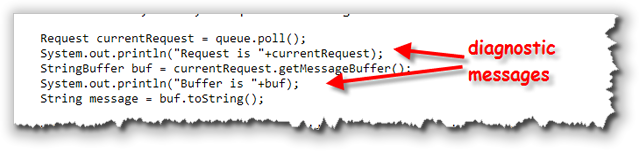
Of course, this can be a tedious and time-consuming process, since you have to a) insert the print statements, b) analyze them, c) adjust them, and then d) remove them once you've found and corrected the bug.
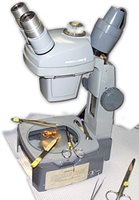
Wouldn't be nice if you could just put your program into a state of suspended animation, and then just look at the contents of your variables, using some kind of "virtual microscope"?The good news is, you can, by learning how to use a program called a debugger. A debugger really is a "virtual microscope" that helps you find the cause of bugs. Debuggers work by:
- tracing through the program,
- pausing it temporarily,
- and then examining any variables you're interested in,
- before resuming.
Debuggers vary widely from one system to another, but the DrJava debugger, which we'll examine here, is really quite sophisticated. The basic debugging skills you'll learn and use, though, will work on any system; only the names of the commands will change as you move from IDE to IDE.
Using a Debugger
Modern IDEs, like DrJava, contain debugging programs that allow you to interactively execute your programs. You can stop and restart your program and see the contents of variables whenever your program is temporarily suspended. At each stop, you have the choice of what variables to inspect and how many program steps to run until the next stop.
Debuggers are not really a tool for lazy programmers, though. If you don't know what your program is supposed to do, and you don't know what values your variables are supposed to contain, then a debugger won't help you at all.
While using a debugger is more convenient than inserting diagnostic print commands, is not cost-free. It takes time to set up and carry out an effective debugging session.
Three Useful Commands
As your Java programs get larger, you'll find that simple print statements are just no longer adequate. You really will need to learn how to use a debugger. Fortunately, three very basic commands will cover 80 or 90% of the debugging that you'll need to do:
-
 First, you'll need to be able to identify a particular location
in your program where you want to stop, and then just
run the program normally until that point is reached.
When your program comes to the stopping point you've specified,
it will go into the special debugging "suspended" state.
These special stopping locations are called breakpoints, and your
program can have any number of them.
First, you'll need to be able to identify a particular location
in your program where you want to stop, and then just
run the program normally until that point is reached.
When your program comes to the stopping point you've specified,
it will go into the special debugging "suspended" state.
These special stopping locations are called breakpoints, and your
program can have any number of them.
-
 With your program suspended, you'll then want to
examine the state of your variables by inspecting them. A
good debugger will let you examine local variables and
instance variables and both object and primitive types.
You'll often be given the opportunity to specify which
variables you want to examine (called a "watch") so you
don't have to go hunting through dozens of variables to
find the ones you're interested in.
With your program suspended, you'll then want to
examine the state of your variables by inspecting them. A
good debugger will let you examine local variables and
instance variables and both object and primitive types.
You'll often be given the opportunity to specify which
variables you want to examine (called a "watch") so you
don't have to go hunting through dozens of variables to
find the ones you're interested in.
-
 Finally, if you don't immediately find the problem by
inspecting the variables, you'll need to know how to
run your program in slow motion, a line at a time.
Debuggers allow
you to execute a single line and then pause again, so that
you can inspect the changes made by that line. They will
also let you specify whether a line containing a method
call should be followed, thus stepping into the method, or
whether you should just call the method, thus stepping
over it.
Finally, if you don't immediately find the problem by
inspecting the variables, you'll need to know how to
run your program in slow motion, a line at a time.
Debuggers allow
you to execute a single line and then pause again, so that
you can inspect the changes made by that line. They will
also let you specify whether a line containing a method
call should be followed, thus stepping into the method, or
whether you should just call the method, thus stepping
over it.
While debuggers vary from platform to platform, every debugger will support these three operations, even if the names and techniques are slightly different. That means that learning to create breakpoints, watch variables, and step over your code using DrJava will be valuable, even if you end up working with a different IDE.
DrJava Debugging Session
To have a realistic example for running a debugger, let's walk
through a sample debugging session. To do this, we'll
study a class named Word whose primary purpose is to count
the number of syllables in a word. (This example is from Cay Horstmann's
textbook, Big Java, but I've modified the code a bit.)
To follow along, we'll use two Java source code files, Word.java
and SyllableCounter.java, which you'll find in this week's
download folder. Go ahead and open both of them and compile. Then,
select the SyllableCounter.java in the Definitions Pane,
and click Run.
When the program starts, enter "hello yellow peach." as the
input.
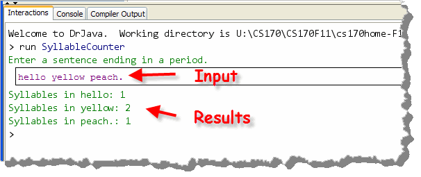
As you can see, the program tells you that there is one syllable in hello, two syllables in yellow and one syllable in peach. I guess two in three isn't bad, but we can do better.Here's the rule that the class is supposed to use to count syllables:
- Each group of adjacent vowels (a, e, i, o, u, y) counts as one syllable (for example, the "ea" in "peach" contributes one syllable, but the "e . . . o" in "yellow" counts as two syllables). However, an "e" at the end of a word doesn't count as a syllable. Each word has at least one syllable, even if the previous rules give a count of 0.
- Any non-letter characters that appear at the beginning and end of the string are ignored, since we don't want to count quotation or punctuation marks.
Obviously, our code is not following this rule when it comes to the word "hello". But exactly where does the problem lie? We can use the debugger to find out. The debugger will allow us to run the program, step-by-step and examine it, while it is "paused". To do this, we'll need to put the program into "suspended animation" when it encounters the portion of the program that we want to examine.
The only question is, "where should we start?"
Run To a Particular Line
 Using a debugger won't answer that question for you, but it
does give you a way to find the answer. Remember, your
debugger is a tool you'll use to investigate your program: you'll
still have to use your logic skills to ferret out the clues.
Using a debugger won't answer that question for you, but it
does give you a way to find the answer. Remember, your
debugger is a tool you'll use to investigate your program: you'll
still have to use your logic skills to ferret out the clues.
So, here's a clue. What part of the program is incorrect? That's easy; obviously the code that calculates the number of syllables doesn't seem to work.
Looking
through the Word class we find a method named
countSyllables(). That seems like a really promising place to
start our investigation.
To start debugging your program at the countSyllables()
method, we need to put a breakpoint on the first line of
executable code inside the method. Simply
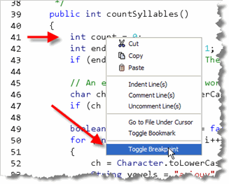
- find the line, and then
- right-click in the Definitions Pane, and then,
- from the context menu, select Toggle Breakpoint.
You can also set a breakpoint by using the "hotkey" combination Ctrl+B, or the Toggle Breakpoint on Current Line selection on the Debugger menu.
Once you've set a breakpoint, your screen should look like this:
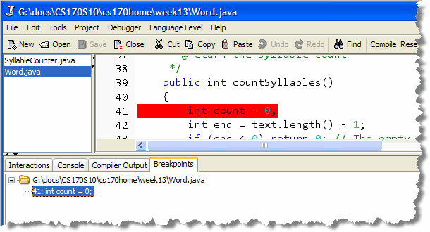
Starting the Debugger
Now that you have the breakpoint set, you need to start the
debugger. That's pretty easy. Just switch on Debugger Mode
from the Debugger menu:
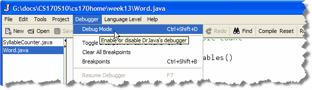
Then, make sure SyllableCounter is the selected file and click the Run button on the toolbar. (This won't work if Word.java, where you put the breakpoint is still selected, since it doesn't have amain() method).
The program will start running, just like it did before, (although there is an extra panel in the middle of the screen, which we'll talk about shortly). When asked to enter your sentence, enter hello yellow peach., just as before and then press Enter. At this point, your program really goes into suspended animation, and the layout changes to something that looks like that shown below.
This is the Debugger Mode Layout. Let's look quickly at each of the relevant panes before we continue debugging.
The Debugger Mode Layout
Here's what the debugger layout looks like, once your
breakpoint is hit:
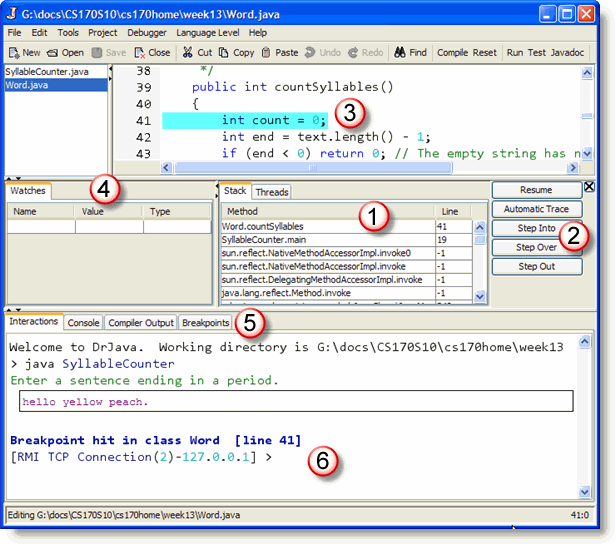
- In the middle, at #1, is the Debug Pane which
acts as a sort of global debugging control panel;
it shows you which programs are
active and suspend and what line is currently executing.
As you can see, we're debugging the SyllableCounter
program. The
SyllableCounter.main()method calledWord.countSyllables()at line 19 and then the main thread was suspended at line 41 on the entry tocountSyllables(). - To the right of the Debug Pane is a small panel (marked #2) containing buttons allowing you to step through your code, line by line. We'll be using these buttons shortly.
- The Definitions Pane appears at the top of the screen at #3. Notice the turquoise line highlighting line 41. This shows you which line of code is "in the wings" waiting to be executed next. This line of code has not yet run, however.
-
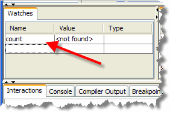
Since line 41 hasn't yet executed, the variable namedcountis not yet created. In #4, the Watch Pane, you can enter the names of different variables, and examine their values as they are created. If we were to type in the variablecount, the window would look like this. - Section #5 shows the Breakpoints Pane, where you can see a list of all active breakpoints and activate and deactivate them without going through the source code window. This is really useful when debugging multi-file programs.
- At the bottom of the screen is the Interactions Pane, along with a message telling you what line the program is currently stopped on. The line that says "RMI TCP Connection 2" is simply telling you that the debugger is actually running your program as if it were on a separate machine, using the TCP network.
In addition to using the Watch Window to examine your variables, you can use the Interactions Pane to examine each variable whenever your program is paused at a breakpoint.
Step Over, Into and Out
Now, let's look at the code. First, the countSyllables()
method needs to check the last character of the word
being examined, to see if it is a letter 'e'. Remember that
we're not going to count a trailing 'e'
as a syllable.
As you can see in the code here, the program
calculates the position of the last character (at text.length() –
1) and then uses the charAt() method to extract the character
and store it in the char variable named ch.
 Let's go forward to that point and see if
Let's go forward to that point and see if ch
actually contains the value that we expect. Since the
first word we entered was "hello", the last character
should be the character 'o'. Let's see
if that's true.
This is really the key to successful debugging; knowing what values your variables should contain at any given point, and then checking to see if the actual value is what you expect.
To run our program in "slow motion", we'll use the various
"step" commands on the Debugger Control Pane, shown below.
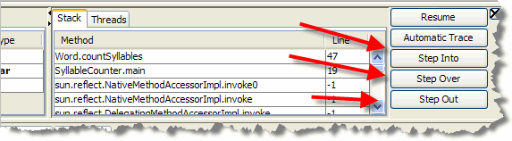
You'll probably want to memorize the keyboard shortcuts as well, because that can be much more efficient. Here's what the various commands do:- The Step Over command
executes the "current" line of code, but if the line of code
contains a method call, it does not step "into" the
method, but simply calls the method (running at full speed)
and then returns to the next line in the current code.
In other words, after doing a "step over",
you'll find yourself in the same source
file, on the next line of executable code.
You should always use Step Over if a line of code contains a library function, like line 42 which calls the
The keyboard shortcut for Step Over is F11.String length()method. You don't want to start debugging the Java class libraries. - The Step Into steps into any method or function
being called, instead of running the method at full speed
before returning to step mode. That means that your cursor
will jump to the first line inside any method
called on the current line. If
there are multiple method calls on that line, then you'll
jump into them in the order that they are evaluated in the
expression.
Usually you'll only use Step Into to examine a) your own code, and b) only when you have already narrowed down the problem to a particular method.#
The keyboard shortcut for Step Into is F12. - The Step Out command immediately leaves the current method and returns to the line that called it. Use Step Out when you accidentally Step Into a method that you intended to Step Over. The keyboard shortcut for Step Out is Shift+F12.
- The Automatic Trace button allows you to issue one Step Into command every second. Basically, it's like running your program in slow motion. You can control how fast each command is issued in the Preferences dialog.
If you're following along, use these techniques to continue to the line
following the line where ch is assigned a value. (That's line 47
in the screenshots here, but it might be different on your computer,
depending on the source formatting.) That's the line that starts
with if (ch == 'e').
Inspecting Variables
With the program stopped, you can now inspect the value
stored in the variable ch. DrJava has two ways to do this.
- First, you can use the Watch Pane. Just type in the name
of the variable you want to see as shown here. Local variables
will appear and disappear as they go in and out of scope:
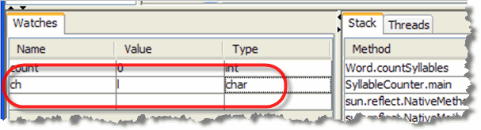
This allows you to watch the variables you are most interested in without having to type the names over and over. - Second, you can simply type the name of the variable
into the Interactions Pane at the prompt. This is good for
quickly examining a variable:
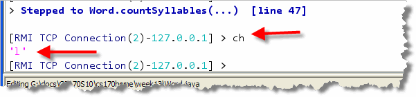
In the Interactions Pane you can also change the value of a variable at any point and then continue debugging. This can be really handy because when you notice a mistake you don't have to stop your debugging session, make the change to your source code to fix the mistaken value, and then step through your code so you can pick up at the point you left off. Instead, you can just make the change, like this, and continue on as if the value were correct.
A word of warning, though. If you do make changes to variables using the Interactions Pane, make sure you write yourself a note so that you remember to change the source code after your debugging session is over. If you don't, your program will still be incorrect, even if you got through the debugging session successfully.
Now, look at the value for ch. You can see that
ch contains the value 'l'. That is
strange. Look at the source code. The end
variable was set to text.length() - 1, which
is the last position in the text string, and
ch is the character at that position.
But, if the word is "hello", then the last character should be 'o'. What this means is that we've encountered our first bug.
Unfortunately, we still don't know what caused it!
Restarting
OK. Now the problem is obvious. Since the end
contains 3, that means that instead of "hello"
we're really looking at the last character in the word
"hell". It looks like we've already gone
past the problem.
While you can step forward into your code, there are no
buttons for "rewinding" or stepping backwards. Instead, you'll
need to set a second breakpoint earlier in your code and then
restart your debugging session. You can use the
Resume button to run to the end of your code, and then
click Run again, or, you can terminate your current
debugging session by toggling Debug Mode on the
Debugger menu.
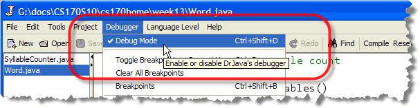
Once you've stopped the program, we need to add another breakpoint. ThecountVowels() method processes the characters
contained in the instance variable named text.
What we need to find is where the text variable
is initialized.
Normally, you'll initialize your instance
variables inside the class constructor, so we'll start looking there.
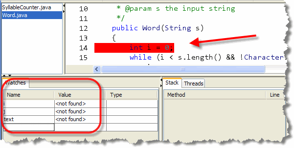
Go ahead and:- put a breakpoint on the
Wordconstructor. - add watches for the variables
iandj.
Once you've done that, single step
through the code that you're on the line
where the text instance variable is assigned a
value. Then, start single step one more time,
and watch each of the variables.
Tracking Down the Problem
To see the problem, look at the values in your
Watch window:
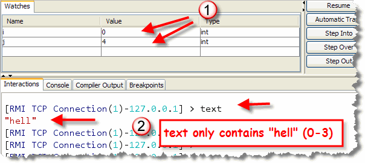
- As you can see,
iandjcontain0and4, which is what you'd expect for the word "hello". (Remember that the first character is 0, so the last index is going to be one less than the length.) It looks like both of them are OK. - To look at the value for the instance
variable
text, we need to use the Interactions Prompt. There, you can see thattextonly contains four, not five characters.
That means that we can definitely say that the
bug occurs on the line the assigns the value to the
instance variable named text.
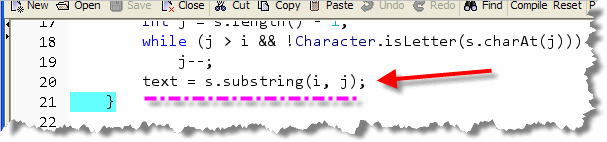
Sincei and j are correct, apparently
we've made a mistake using the substring() method.
And, that seems to be the case. You remember that while the
first parameter in the substring() method is the
character we want to start with, the last parameter is not
the ending index, but the index that is "one past" the end.
That means that to correctly grab the characters i
through j, we need to use the expression
j + 1 as the second parameter when calling the
substring() method.
Go ahead and stop the debugger and run the program again. Now, it should correctly count the number of syllables in "hello".
The Debugging Process
Debugging your code is a process—a series of steps that help you find and fix the errors in your program. The process begins when you determine that your program is producing the wrong output (something you'll normally discover by testing.) The goal of the process is to fix the program, and this is best done in several disciplined steps; it's altogether too easy to fix one problem, and, in the process, introduce another.
To avoid that, you should perform each of the following steps in the debugging process, in order:
- break it,
- isolate it,
- fix it
- and test it
Break It
 It might seems strange that the first step in fixing your program
is to break it; after all, if your program wasn't already broken to
begin with, you certainly wouldn't be debugging it now.
It might seems strange that the first step in fixing your program
is to break it; after all, if your program wasn't already broken to
begin with, you certainly wouldn't be debugging it now.
Well, that's not what breaking it means. Rather than introducing new errors, breaking it refers to your ability to force your program to fail reliably; that is, repeatedly and at will. If your program bugs appear sporadically and unexpectedly, then you don't really have a very good chance of catching them.
Breaking a program involves reproducing the conditions under which it fails. Ask yourself what numbers you entered, where did you click the mouse, what input was provided, what controls were clicked and in what order. Then, sit down and perform exactly the same actions making sure that you've isolated the circumstances where the error occurs.
Don't try to fix the program until you can break it at will.
Until that occurs, you don't really know what the problem is.
Isolate and Understand
 The next step, to locate, isolate and understand the bug, is the most
difficult of the four, so be patient and be prepared to take your
time. To do this, you'll use the techniques of divide and
conquer. Here's how.
The next step, to locate, isolate and understand the bug, is the most
difficult of the four, so be patient and be prepared to take your
time. To do this, you'll use the techniques of divide and
conquer. Here's how.
- If you have no idea where in your code the error occurs,
place a breakpoint on the
main()method and start Stepping Over each of the methods that appear there. After you step over each method, examine the variables or output to see if the error you are trying to fix has occurred. - When the error occurs, locate the last method right before the error occurred. Then, Step Into that procedure and repeat the process; Stepping Over each line inside that procedure. In this way, you'll repeatedly narrow your search until you'll come to the single statement that causes the error.
Once you've located the bug, before you can fix it you'll have to understand exactly what caused the problem. To understand the bug, you have to have a firm grip on what your program should do. What that means is:
- Before you inspect a variable, how have to know the expected values. Just looking at the values won't help at all, if you don't know what the values should be.
- When the value is correct, don't be afraid to look elsewhere. Often this requires you to rethink what is causing the problem. If multiple variables are used in a calculation, for instance, make sure you look at all of them, not just the final "output" variable.
- Make sure you double-check your computations,
especially if they involve integers and floating point
numbers or library methods. If you are calling a method,
like the
substring()method in the example in this section, revisit the documentation to make sure you are doing it correctly. Just because you don't have a syntax error doesn't mean that you are using a method correctly.
Sometimes understanding the problem simply means putting things aside for a bit and then coming back to the problem later. This gives your subconscious mind a chance to chew on the problem a bit.
Fix and Test
 Once you understand your program well enough to see why
it's not working, you're ready to fix it. Think through the
changes you need to make. Look at the big picture, especially
when you are working with large numbers or performing a
complex calculation. Is the answer you're getting generally
reasonable?
Once you understand your program well enough to see why
it's not working, you're ready to fix it. Think through the
changes you need to make. Look at the big picture, especially
when you are working with large numbers or performing a
complex calculation. Is the answer you're getting generally
reasonable?
Sometimes the change you need to make is simple and involve only a single line of code; other times you may realize that your whole concept was flawed and you'll need to redesign an entire method or even an entire class.
If you've ever watched television, you've probably seen the situation-comedy episode where the well-meaning father decides to fix the roof or the shower instead of calling in an expensive professional. This plot device has endured for so many years because it is so true to human nature; all of us tend to rush in blindly, "fixing" things but leaving the situation worse than when we began.
To avoid having to call in the "software plumber" to repair your fixes, it's always a good idea to make a backup of your code before performing radical surgery. For more modest changes, you might want to comment out the original line of code before adding your new changes, in the event that you discover your original code was correct after all.
At this point, 90% of the programmers will pack up their tools and head for home. A good craftsman always performs one more step: testing the repair to see if the new kitchen light actually can be turned on and off.
Testing and debugging are not the same thing. Debugging begins when you learn that your program contains an error. It is the process of isolating the bug and removing it. Testing, on the other hand, is aimed at determining exactly what bugs still remain in your program.
Testing turns into debugging when an error is found and debugging should always transition back to testing to make sure your fixes are good. In the testing-debugging process you will constantly bounce back and forth between these two until you're sufficiently confident that no serious bugs remain.

Debugging with DrJava Summary
- A debugger lets you pause your program when it is running, examine the values in your variables and then continue running your program one line at a time.
- The first step is to set a breakpoint on the line where you want your program to stop. In DrJava you do that with Control+B.
- After setting your breakpoint(s), use the Debugger menu to activate the debugger, and then run your program as normal. When a breakpoint is encountered, your program will enter "suspended animation".
- To examine the state of your variables you can use the Interactions Pane as normal, or, you can create a watch expression to automatically examine a variable as your program continues.
- To continue running you can set over to execute the entire current line, and go to the next.
- If you press step into, the current line is executed, but if there are any method calls on the line, the debugger advances to the first line inside that method.
- When you step into a method but you meant to step over, you can press step out to leave the current method and return to where you left off.
- To continue running at full speed you can press resume.
- The debugger will not allow you to step backwards; instead, you need to terminate your debugging session and then set a new breakpoint, earlier in your code.
- Successful debugging involves a systematic process for locating errors. You must first be able to reliably reproduce the error. Then, locate the error using divide and conquer.
- Once you've isolated a bug, you have to understand exactly what caused the problem. Before you can do that, you have to know what your program should do, and what values each variable should contain.
- After fixing a bug, you should test the correction to make sure it works as you expected.